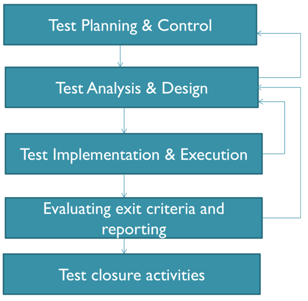
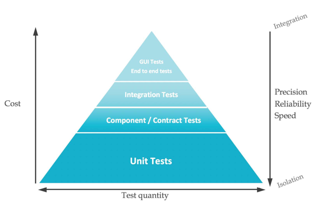
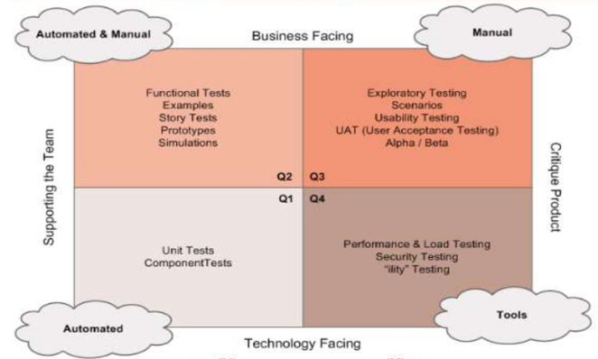

Agile Design and Testing
Table of Contents
- 1. Exam Questions Bank
- 2. Software Lifecycles and Fundamentals of Testing
- 2.1. What is Software
- 2.2. What is Software Engineering
- 2.3. Why Software Fails?
- 2.4. Reliability
- 2.5. Testing Triangle
- 2.6. Software process
- 2.7. Testing process
- 2.8. What is testing
- 2.9. Static vs Dynamic
- 2.10. Seven Testing Principles
- 2.11. Verification vs Validation
- 2.12. Test Coverage
- 2.13. General testing process
- 2.14. Test Design
- 2.15. Test Levels
- 2.16. Test Types
- 2.17. Reviews
- 3. User Stories
- 4. Agile Testing
- 5. Design Patterns
- 6. Agile Design
- 7. McCabe's Cyclomatic Complexity
- 8. Cucumber and BDD
- 9. Scaffold for Parameterized Testing
- 10. Mockito
- 11. Remove at the End
1. Exam Questions Bank
- (1x) Analyse a piece of code an point out why is it hard to test. CODE 1
- (1x) Propose a refactoring plan for the same piece of code as in CODE 1
- (1x) How would you use
mockitoto test CODE 1 - (1x) With regards to
mockito: what is adummy,stuband aspy? What is atest double? - (1x) Why is a piece of given code challenging to test using
mockito? - (1x) From a list of test categorized them in terms of:
Unit Test,Integration Tests,UI/E2E Tests. Explain reasoning. - (1x) Purpose of the
Test Pyramid. Importance to structure the tests according to the Pyramid. - (1x) What is
Cucumberand how does it fit withBDD? - (1x) Write a
Cucumber DataTableto achieve 100%code and branch coverage - (1x) Using
Seleniumand potential problems with selecting elements and exceptions thrown with it - (2x) How many tests required to achieve
100% branch coverageand100% code coveragein given code. - (1x) Write a
parameterized testwithCSVSourceto achieve100% branch coverage - (1x) Explain
Command Query Separation(CQS) - (3x) Draw a
control flow graphfor a specific piece of code. UseE-N+2to calculate thecyclomatic complexity.Hybrid Flow Graphused on one exam
- (1x) AI produced a user story, rewrite it using
INVESTprinciples and addAcceptance Tests. - (2x) What is
McCabe's Cyclomaticnumber? - (2x) Calculate
cyclomatic complexityfor a given code- (1x) Three different methods for calculating it, explain them
- (1x) Use
agile testing quadrantsto categorize a list of user stories - (2x) Use
equivalence partitioningandBVA - (1x) Explain
parameterized testing. How do you use them in jUnit5? - (1x) Using
SOLIDprinciples and evaluating code in terms ofSOLID. - (1x) Which
design patternis used in a given example? (here it is a singleton) - (1x) Returning an error as a String, what is the problem with that?
- (1x) Break down
EpicsintoUser Stories - (1x)
VerificationvsValidation - (1x)
Static analysis: what is it? what benefits it provides? - (1x) Write user
acceptance criteriafor tests - (1x) Re-write user stories based on
INVEST - (1x) What is a
Dependency Inversion Principle? Does a piece of given code comply to it? - (1x)
!!!Why testing can only detect the presence of errors and their absence? - (1x) What is
Open-Close Principle? - (1x) Write a
state transitionsequence
2. Software Lifecycles and Fundamentals of Testing
2.1. What is Software
- Computer programs and associated documentation (requirements, design models, user manuals)
- Bespoke or generic
2.2. What is Software Engineering
- Engineering discipline that is concerned with the aspect of software production
- Should adopt systematic and organised approach to software creation
2.3. Why Software Fails?
- Error (leads to >) Defect (causes an observed) Failure
- A person makes an error > that creates a fault (defect) > that causes a failure
- To avoid failure we must either avoid errors and fault or find and fix them
2.4. Reliability
- Probability that software will not cause failures
- Extensive testing to prevent failures as soon as errors occur (at the beginning or the end of software creation)
2.5. Testing Triangle
- Time - Money - Quality, balance between
- Testing ensures functional and non-functional requirements are examined and defect reported
2.6. Software process
- Specification > Development > Validation > Evolution
2.7. Testing process
Diagram

Planning
- Determine what will be tested
Control
- What to do when activities do not match up to plan
Analysis and Design
- Review requirements, architecture, interface specs, etc
- Analyse test conditions and input data
Implementation and Execution
- Develop and prioritize test cases
- Running tests
Evaluation and reporting
- Checking if we succeeded, basically
- Write up results
Closure
- Docs in order
- Close down env and infra
- Handover to maintenance team
2.8. What is testing
- Testing is a systematic exploration of a component with the aim of finding defects
2.9. Static vs Dynamic
- Static testing is where code is not executed (e.g. specification document review)
- Dynamic testing is where code is ran with some test data
2.10. Seven Testing Principles
- Testing can only show the presence of bugs, not their absence
- Exhaustive testing is impossible
- Early Testing (late testing, especially under pressure is bad, also, the later the more expensive the fix)
- Defect Clustering (80% of problems found in 20% of modules)
- Pesticide Paradox (running the same test will not reveal new defects)
- Testing is context dependent (different tests for different needs)
- Absence of error fallacy (no errors does not means that they aren't there)
2.11. Verification vs Validation
- Verification: are we building the right product? (process infused)
- Software inspection
- Validation: are we building the product right? (requirements infused)
- Software testing
2.12. Test Coverage
Info
- Provides a quantitative assessment of the extent and quality of testing
Black Box
- The nitty gritty
- Equivalence Partitioning
- BVA
White Box
- Structural testing: branches, components, etc.
- Control Flow Graphs (CFG, uses number and circles to represent all "blocks"): models all execution of a method by describing control statements
- Node: statement (sequenced). Use dummy nodes for things like while loops.
- Edge: transfer of control (e.g. IF, write the condition on the edge, remember the for loops have condition inside of them)
- Block: sequence of statements
Fundamental Three structures of code
- Sequence - statements one after another
- Selection (branching) - choice
- Iteration (looping)
Statement Coverage
- Does not necessarily cover all paths, it merely executes all statements
- When using a flowchart we only need to check which statements are executed, not which paths are taken
Branch Coverage
2.13. General testing process
- Requirements > Design > Code > Test
- Incremental - add-on
- Iterative - re-do
- Problems with iterative: customer involvement, lack of docs, details may be lost if changes are not recorded
2.14. Test Design
- Identify test conditions: an item or event that could be verified with testing
- Specify test cases: various inputs to test the event/component
- Specify test procedures: actions to take (given/when/then)
2.15. Test Levels
- Unit: component
- Arrange (setup), act (execute), assert (check)
- Integrating: component interaction
- System: E2E
- Acceptance: End user confidence and satisfaction
2.16. Test Types
- Functional: specific functionality, e.g. search feature (aka specification based testing)
- Non-functional: behavioural aspects (e.g. performance under load)
- Testing after code changes: always re-test after fixes are applied (retesting, confirmation testing). Unchanged software also needs to be tested (regression testing, "just in case" scenario)
2.17. Reviews
Types
- Informal
- Walk-through
- Technical Review
- Inspection
Objective
- Finding defects
- Gain understanding
- Generate discussion
- Decision making by consensus
Typically found during reviews
- Deviation from standards
- Requirements defects
- Design defects
- Insufficient maintainability
- Incorrect interface specs
- Proven an efficient and effective method for improving software
3. User Stories
3.1. Definition
- A concise, written description of a piece of functionality that will be valuable to a use (or owner) of the software
- 3Cs: Card, Conversation, Confirmation
- As a
role, I wantgoal, so thatreason(aka Who/What/Why)
3.2. INVEST
- Independent
- Negotiable
- Valuable
- Estimatable
- Small
- Testable
3.3. Acceptance Criteria
- Usually written in the Given > When > Then form
3.4. Definition of Done
- What counts as a user story being done?
3.5. Defining the User or Personas
- Clearly define who is a user and what are the competency levels
- Personas are basically different users of the system, they describe who or what a specific user is
3.6. Special User Stories
- Non-functional Stories
- Bug Stories
- Spike Stories (research)
4. Agile Testing
4.1. The Test Pyramid

4.2. Testing Quadrant

5. Design Patterns
5.1. Creational
- Create objects for you
- Builder: used to construct complex objects that often require their own deps, etc.
- Factory: used to create instances, often with a specific setup in mind. Can be subtypes of an interface or a setup of a concrete class but with certain methods already called on it.
- Singleton
5.2. Structural
- Compose groups of objects into larger structures
- DAO: Hides the implementation details. Enables transparent access to the data structure.
5.3. Behavioral
- Help to facilitate communication between objects
5.4. Anti-pattern
- Reinventing the wheel in a bad way
6. Agile Design
6.1. Info
- Build software in small increments
6.2. Poor design (smells)
- Rigidity
- Fragility
- Immobility
- Viscosity
- Needless complexity
- Needless repetition
- Opacity
6.3. Single responsibility principle (SRP)
6.4. Open-Closed Principle
- Modules/classes/functions should be open to extensions but closed for modifications. As in: it is ok to extend something, but don't modify the base (like Liskov).
6.5. Liskov's Substitution Principles
- Subtypes must be suitable for their base types
- Basically the sub-type should not override the workings of the base to suite its own needs, you probably just have the wrong abstraction to begin with (or the whole system is not designed correctly)
6.6. Interface Segregation Principle (ISP)
- Make many small interfaces, rather than one large one.
- Inherit from many interfaces rather than dependency inject only one or few. Especially when we're constructing a derived class.
6.7. Dependency Inversion Principle (DIP)
- High level modules should not depend on low level modules.
- Abstractions should not depend on details -> details should depend on abstractions.
7. McCabe's Cyclomatic Complexity
7.1. Definition
- Design related metric
- Uses control flow graphs to determine its complexity
E - N + 2, where E are edges and N are nodes. Basically it isBranches + 1
7.2. Example Control Flow Graphs

8. Cucumber and BDD
8.1. Cucumber
- A testing framework: It bridges the gap between non-technical stakeholders (like business analysts) and developers by letting everyone understand requirements in plain language.
- Language-agnostic: While it originally used Ruby, now it supports multiple programming languages such as Java, JavaScript, Python, and more.
- Executable specifications: The scenarios written in Cucumber can be run as automated tests, ensuring the software behaves as intended.
Example
Feature: User login
Scenario: Successful login with valid credentials
Given the user is on the login page
When the user enters valid credentials
And clicks the login button
Then the user should be redirected to the dashboard
DataTable
Scenario: Add multiple users
Given the following users exist:
| Name | Email | Role |
| Alice | alice@example.com | Admin |
| Bob | bob@example.com | User |
| Charlie | charlie@example.com | Manager |
8.2. BDD
- You define the behavior of software in terms of expected outcomes, not implementation.
- Scenarios are written in plain language, understandable by all stakeholders.
- Tests are created based on these behavior specifications.
8.3. Cucumber and BDD
- It allows writing requirements in plain English (or any supported language), making them accessible to non-developers.
- The same scenarios serve as both documentation and automated tests, keeping behavior consistent.
- Encourages collaboration between developers, testers, and business stakeholders, which is the core principle of BDD.
9. Scaffold for Parameterized Testing
9.1. pom for jupiter and jupiter with params
<dependencies> <dependency> <groupId>org.junit.jupiter</groupId> <artifactId>junit-jupiter-api</artifactId> <version>5.4.2</version> <scope>test</scope> </dependency> <dependency> <groupId>org.junit.jupiter</groupId> <artifactId>junit-jupiter-engine</artifactId> <version>5.4.2</version> <scope>test</scope> </dependency> <dependency> <groupId>org.junit.jupiter</groupId> <artifactId>junit-jupiter-params</artifactId> <version>5.4.2</version> <scope>test</scope> </dependency> </dependencies>
9.2. Using the MethodSource with an expected Throw
@ParameterizedTest(name = "All input prices: {0}") @MethodSource("provideShoppingInvalidInputArray") @DisplayName("Shopping Invalid Input Array") void testShoppingInvalidInputArray(double[] prices) { IllegalArgumentException exception = assertThrows(IllegalArgumentException.class, () -> Shopping.calculateFinalTotal(prices, false)); assertEquals("Five items are expected as the input array.", exception.getMessage()); } static Stream<Arguments> provideShoppingInvalidInputArray() { return Stream.of( Arguments.of(new double[] {0, 0, 0, 0}), // 4 items Arguments.of(new double[] {2, 1, 0, 0, 0, 0}) // 5 items ); }
9.3. Using the MethodSource with an asssertEquals
@ParameterizedTest(name = "Input prices: {0}, should be = {1}") @MethodSource("provideShoppingNonPriority") @DisplayName("Shopping Valid non-Priority Input Prices") void testShoppingNonPriority(double[] prices, double shouldBe) { assertEquals(Shopping.calculateFinalTotal(prices, false), shouldBe, 0.01); } static Stream<Arguments> provideShoppingNonPriority() { return Stream.of( Arguments.of(new double[] {0, 0, 0, 0, 0}, 0.0), Arguments.of(new double[] {0.01, 0, 0, 0, 0}, 0.01), // 0.01 Arguments.of(new double[] {20, 20, 9.99, 0, 0}, 49.99), // 49.99 Arguments.of(new double[] {20, 20, 10, 0, 0}, 47.5), // 50 = 47.5 Arguments.of(new double[] {20, 20, 10.01, 0, 0}, 47.51), // 50.01 = 47.51 Arguments.of(new double[] {20, 20, 10, 40, 9.99}, 94.99), // 99.99 = 94.99 Arguments.of(new double[] {50, 50, 0, 0, 0}, 90.0), // 100 = 90 Arguments.of(new double[] {50, 50, 0.01, 0, 0}, 90.0), // 100.01 = 90 Arguments.of(new double[] {50, 50, 99.99, 0, 0}, 179.99), // 199.99 = 179.99 Arguments.of(new double[] {50, 50, 50, 50, 0}, 170.0), // 200 = 170 Arguments.of(new double[] {50, 50, 50, 50.01, 0}, 170.0) // 200.01 = 170.0 ); }
9.4. Using the CsvSource
@ParameterizedTest @CsvSource(value= {"10:F","30:E","45:D","60:C","75:B","87:A"},delimiter=':') void testGrades(int gradeNum,char shouldBeGrade) { assertEquals(shouldBeGrade, studentGrade.getGrade(gradeNum)); }
9.5. Using the CsvFileSource (put the CSVs in the main/resources directory)
@ParameterizedTest(name = "The year {0} should be {1}") @CsvFileSource(resources = "/leapyears.csv") void testLeapYears(int year, boolean shouldBe) { assertEquals(DateUtils.isLeapYear(year), shouldBe); }
The leapyears.csv file:
1992,True 1996,True 1991,False 1900,False 2000,True
9.6. Using the ValueSource
@ParameterizedTest(name = "Investment of {0} should be illegal") @ValueSource(ints= {800, 999, 10001, 11000}) void testExceptionThrowingInvestments(int investment) { IllegalArgumentException exception = assertThrows(IllegalArgumentException.class, () -> InvestmentCalc.calculateInvestment(investment, 4)); assertEquals("Investment has to be between 1000 and 10 000. Given value: " + investment, exception.getMessage()); }
10. Mockito
10.1. Info
- Dummy: The mock, it is the actual test-double.
mock(User.class) - Stub: Just dummy data being passed in or returned, non-important to the outcome, also used to provide pre-defined responses to methods.
when > thenReturn - Spy: Used to verify if the real object does what it is supposed to do (a wrapper). It is exactly like a mock object, except it is wrapped around a real one.
spy(realObject)
10.2. Sample
class PayoutSchedulerTestMG { TransactionDAO transactionDAO; MembershipDAO membershipDAO; StripeService stripeService; AuditLogger auditLogger; // Mock AuditLogger List<TransactionDto> transactions; PayoutScheduler payoutScheduler; // MG @BeforeEach void setup() { transactionDAO = mock(TransactionDAO.class); membershipDAO = mock(MembershipDAO.class); stripeService = mock(StripeService.class); auditLogger = mock(AuditLogger.class); // Mock AuditLogger transactions = new ArrayList<>(); payoutScheduler = new PayoutScheduler(transactionDAO, membershipDAO, stripeService, auditLogger); } // MG @Test // 1 void whenNoTransactionToProcessReturnsZero() throws EduStreamDAOException, EduStreamStripeException, SQLException { // Mock behavior: No transactions found when(transactionDAO.retrieveUnprocessedTransactions(anyInt())).thenReturn(new ArrayList<>()); // Call reconcile method int result = payoutScheduler.reconcile(1); // Assert that 0 transactions were processed assertEquals(0, result); // Verify that transaction fetch was logged verify(auditLogger).logTransactionFetch(1, 0); // verify that no getMembershipDetails was called verify(membershipDAO, times(0)).getMembershipDetails(anyInt()); // Verify no interaction with setPayoutDetails and sendPayout verify(membershipDAO, never()).setPayoutDetails(anyInt(), any()); verify(stripeService, never()).sendPayout(any()); // Verify no payout calculation or payout sent was logged verify(auditLogger, never()).logPayoutCalculation(anyInt(), anyDouble()); verify(auditLogger, never()).logPayoutSent(anyInt(), anyDouble()); } @Test // 2 void testEduStreamDAOException() throws SQLException, EduStreamStripeException { // Mock behavior: SQLException thrown when(transactionDAO.retrieveUnprocessedTransactions(anyInt())).thenThrow(new SQLException()); // Assert that the EduStreamDAOException is thrown with the correct message EduStreamDAOException exception = assertThrows(EduStreamDAOException.class, () -> { payoutScheduler.reconcile(1); }); assertEquals("Error in connection to EduStream database", exception.getMessage()); verify(auditLogger).logPayoutFailure(1, "Error in connection to EduStream database"); // Verify no interaction with setPayoutDetails and sendPayout verify(membershipDAO, never()).setPayoutDetails(anyInt(), any()); verify(stripeService, never()).sendPayout(any()); // Verify no payout calculation or payout sent was logged verify(auditLogger, never()).logPayoutCalculation(anyInt(), anyDouble()); verify(auditLogger, never()).logPayoutSent(anyInt(), anyDouble()); } @Test // 3 void whenOneTransactionToProcessReturnsOne() throws EduStreamDAOException, EduStreamStripeException, SQLException { // Create a single transaction transactions.add(new TransactionDto(1, 100.0)); // Mock behavior: One transaction found when(transactionDAO.retrieveUnprocessedTransactions(anyInt())).thenReturn(transactions); // Mock membership details when(membershipDAO.getMembershipDetails(anyInt())).thenReturn(new MembershipDto(1, 0.1)); // Call reconcile method int result = payoutScheduler.reconcile(1); // Assert that 1 transaction was processed assertEquals(1, result); // Verify logging of transaction fetch and payout calculation verify(auditLogger).logTransactionFetch(1, 1); verify(auditLogger).logPayoutCalculation(1, 90.0); // 100 - 10% commission verify(auditLogger).logPayoutSent(1, 90.0); // Verify interactions with setPayoutDetails and sendPayout verify(membershipDAO, times(1)).setPayoutDetails(anyInt(), any(PayoutDto.class)); verify(stripeService, times(1)).sendPayout(any(PayoutDto.class)); } @Test // 4 void whenTwoTransactionsToProcessReturnsTwo() throws EduStreamDAOException, EduStreamStripeException, SQLException { // Create two transactions transactions.add(new TransactionDto(1, 100.0)); // First transaction of 100.0 transactions.add(new TransactionDto(1, 200.0)); // Second transaction of 200.0 // Mock behavior: Two transactions returned when(transactionDAO.retrieveUnprocessedTransactions(anyInt())).thenReturn(transactions); // Mock membership details (e.g., 10% commission rate) when(membershipDAO.getMembershipDetails(anyInt())).thenReturn(new MembershipDto(1, 0.1)); // Call reconcile method for educator with ID 1 int result = payoutScheduler.reconcile(1); // Assert that 2 transactions were processed assertEquals(2, result); // Verify logging of transaction fetch verify(auditLogger).logTransactionFetch(1, 2); // Verify that payout calculation is logged (total payout: 100 + 200, minus 10% // commission) verify(auditLogger).logPayoutCalculation(1, 270.0); // 300 - 10% commission = 270.0 // Verify that payout was sent to Stripe verify(auditLogger).logPayoutSent(1, 270.0); // Verify that MembershipDAO setPayoutDetails is called with the correct payout verify(membershipDAO, times(1)).setPayoutDetails(anyInt(), any(PayoutDto.class)); verify(stripeService, times(1)).sendPayout(any(PayoutDto.class)); } @Test // 5 void testEduStreamStripeException() throws SQLException, EduStreamStripeException { // Create a single transaction transactions.add(new TransactionDto(1, 100.0)); // Mock behavior: One transaction found when(transactionDAO.retrieveUnprocessedTransactions(anyInt())).thenReturn(transactions); // Mock membership details when(membershipDAO.getMembershipDetails(anyInt())).thenReturn(new MembershipDto(1, 0.1)); // Mock behavior: StripeService throws an exception doThrow(new EduStreamStripeException("Stripe Payment Error")).when(stripeService) .sendPayout(any(PayoutDto.class)); // Assert that EduStreamStripeException is thrown with the correct message EduStreamStripeException exception = assertThrows(EduStreamStripeException.class, () -> { payoutScheduler.reconcile(1); }); assertEquals("Stripe Payment Error", exception.getMessage()); // Verify logging of transaction fetch and payout calculation, but log failure // when Stripe error occurs verify(auditLogger).logTransactionFetch(1, 1); verify(auditLogger).logPayoutCalculation(1, 90.0); // 100 - 10% commission verify(auditLogger).logPayoutFailure(1, "Stripe Error: Stripe Payment Error"); // Verify that setPayoutDetails is not called verify(membershipDAO, never()).setPayoutDetails(anyInt(), any(PayoutDto.class)); } }
10.3. Concrete Class
public class PayoutScheduler { private TransactionDAO transactionDAO; private MembershipDAO membershipDAO; private StripeService stripeService; private AuditLogger auditLogger; // New addition public PayoutScheduler(TransactionDAO transactionDAO, MembershipDAO membershipDAO, StripeService stripeService, AuditLogger auditLogger) { this.transactionDAO = transactionDAO; this.membershipDAO = membershipDAO; this.stripeService = stripeService; this.auditLogger = auditLogger; // New addition } public int reconcile(int educatorId) throws EduStreamDAOException, EduStreamStripeException { try { // Retrieve all transactions for the last 30 days List<TransactionDto> transactions = transactionDAO.retrieveUnprocessedTransactions(educatorId); auditLogger.logTransactionFetch(educatorId, transactions.size()); // Log transaction fetch if (transactions.isEmpty()) { return 0; // No transactions to process } // Retrieve membership info MembershipDto membership = membershipDAO.getMembershipDetails(educatorId); double commissionRate = membership.getCommissionRate(); // Calculate total payout (apply commission) double totalAmount = 0; for (TransactionDto transaction : transactions) { totalAmount += transaction.getAmount() * (1 - commissionRate); } auditLogger.logPayoutCalculation(educatorId, totalAmount); // Log payout calculation // Create payout details PayoutDto payoutDto = new PayoutDto(educatorId, totalAmount); // Send payout details to Stripe stripeService.sendPayout(payoutDto); auditLogger.logPayoutSent(educatorId, totalAmount); // Log payout sent // Store payout information membershipDAO.setPayoutDetails(educatorId, payoutDto); return transactions.size(); } catch (SQLException e) { auditLogger.logPayoutFailure(educatorId, "Error in connection to EduStream database"); // Log failure due to SQLException throw new EduStreamDAOException("Error in connection to EduStream database"); } catch (EduStreamStripeException e) { auditLogger.logPayoutFailure(educatorId, "Stripe Error: " + e.getMessage()); // Log failure due to Stripe exception throw e; } } }